handon-11-pyqt5#
# conda install -c anaconda pyqt
%matplotlib inline
#%matplotlib qt
import numpy as np
import matplotlib.pyplot as plt
from mpl_toolkits import mplot3d
fig = plt.figure()
ax = plt.axes(projection='3d')
plt.show()
# in another windows; not sure how it would work in iOS
# actually now internal server error
# 23-10-09 14:01:58.252 python[35577:3996244] Warning: Window move completed without beginning
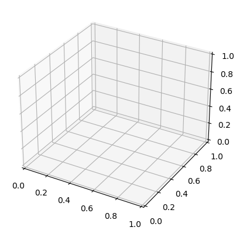
fig = plt.figure()
ax = plt.axes(projection='3d')
z = np.linspace(0, 30, 1000)
x = np.sin(z)
y = np.cos(z)
ax.plot3D(x, y, z, 'red')
plt.show()
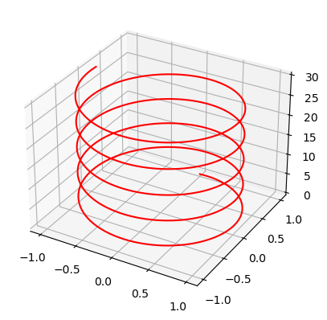
fig = plt.figure()
ax = plt.axes(projection='3d')
y = np.random.random(100)
x = np.random.random(100)
z = np.random.random(100)
ax.scatter3D(x, y, z, cmap='cool');
plt.show()
# /var/folders/33/krstvgns2rncl74r18tkv6_80000gn/T/ipykernel_35577/3836579356.py:7: UserWarning: No data for colormapping provided via 'c'. Parameters 'cmap' will be ignored
# ax.scatter3D(x, y, z, cmap='cool');
<ipython-input-3-921bd9c2512b>:7: UserWarning: No data for colormapping provided via 'c'. Parameters 'cmap' will be ignored
ax.scatter3D(x, y, z, cmap='cool');
x = np.linspace(-10, 10, 30)
y = np.linspace(-10, 10, 30)
X, Y = np.meshgrid(x, y)
Z = np.sin(np.sqrt(X ** 2 + Y ** 2))
fig = plt.figure()
ax = fig.add_subplot(projection='3d')
ax.contour(X, Y, Z, 50, cmap='coolwarm')
plt.show()
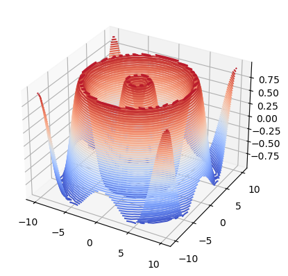
x = np.linspace(-10, 10, 30)
y = np.linspace(-10, 10, 30)
X, Y = np.meshgrid(x, y)
Z = np.sin(np.sqrt(X ** 2 - Y ** 2))
fig = plt.figure()
ax = fig.add_subplot(projection='3d')
ax.contour(X, Y, Z, 50, cmap='coolwarm')
plt.show()
# /var/folders/33/krstvgns2rncl74r18tkv6_80000gn/T/ipykernel_35577/265096374.py:4: RuntimeWarning: invalid value encountered in sqrt
# Z = np.sin(np.sqrt(X ** 2 - Y ** 2))
<ipython-input-5-7e4442a5b441>:4: RuntimeWarning: invalid value encountered in sqrt
Z = np.sin(np.sqrt(X ** 2 - Y ** 2))
fig = plt.figure()
ax = plt.axes(projection='3d')
Z = np.sin(np.sqrt(X ** 2 + Y ** 2))
#Z = np.sin(np.sqrt(X ** 2 - Y ** 2))
ax.contour3D(X, Y, Z, 40,
cmap='coolwarm')
plt.show()
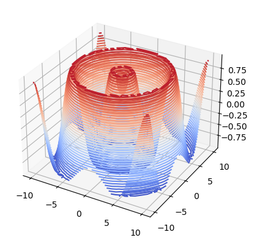
fig = plt.figure()
ax = fig.add_subplot(projection='3d')
Z = np.sin(np.sqrt(X ** 2 + Y ** 2))
#Z = np.sin(np.sqrt(X ** 2 - Y ** 2))
ax.contourf(X, Y, Z, 50, cmap='coolwarm')
plt.show()
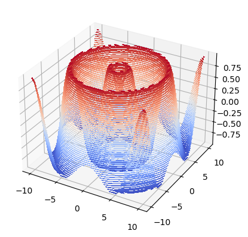
fig = plt.figure()
ax = plt.axes(projection='3d')
Z = np.sin(np.sqrt(X ** 2 + Y ** 2))
#Z = np.sin(np.sqrt(X ** 2 - Y ** 2))
ax.plot_wireframe(X, Y, Z, color='Green')
ax.set_title('wireframe')
plt.show()
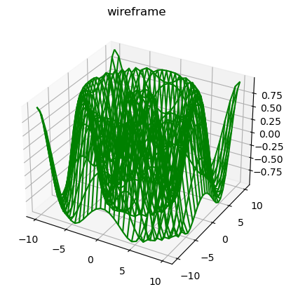
#Z = np.sin(np.sqrt(X ** 2 + Y ** 2))
Z = np.sin(np.sqrt(X ** 2 - Y ** 2))
fig = plt.figure()
ax = plt.axes(projection='3d')
ax.plot_surface(X, Y, Z, color='Blue')
ax.set_title('Surface Plot')
plt.show()
<ipython-input-9-ace2019a1455>:2: RuntimeWarning: invalid value encountered in sqrt
Z = np.sin(np.sqrt(X ** 2 - Y ** 2))
from mpl_toolkits.mplot3d import axes3d
fig = plt.figure()
ax = fig.add_subplot(projection='3d')
X, Y, Z = axes3d.get_test_data(0.02)
ax.plot_wireframe(X, Y, Z,
rstride=10,
cstride=10)
plt.show()
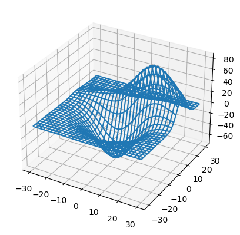
fig = plt.figure()
ax = fig.add_subplot(projection='3d')
colors = ['r', 'g', 'b', 'c', 'm', 'y','k']
yticks = [0, 1, 2, 3, 4, 5, 6]
for c, k in zip(colors, yticks):
x = np.arange(25)
y = np.random.rand(25)
ax.bar(x, y, zs=k, zdir='y',
color=c, alpha=0.8)
plt.show()
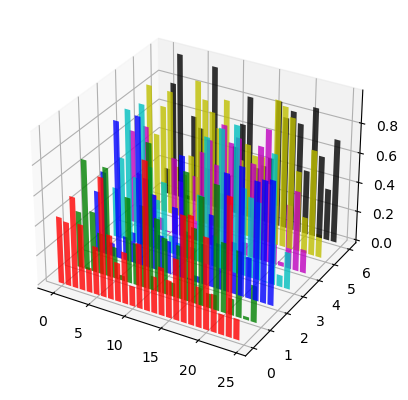
fig = plt.figure()
ax = fig.add_subplot(projection='3d')
x = np.arange(10) * np.arange(10)
y = np.arange(10) * np.arange(10)
x, y = np.meshgrid(x, y)
x, y = x.ravel(), y.ravel()
top = x + y
bottom = np.zeros_like(top)
width = depth = 5
ax.bar3d(x, y, bottom, width,
depth, top,
shade=True,
color='g')
plt.show()
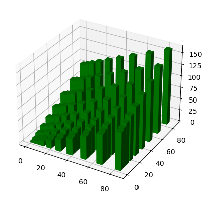
fig = plt.figure()
ax = fig.add_subplot(projection='3d')
x = y = z = np.arange(-0.1, 1, 0.2)
X, Y, Z = np.meshgrid(x, y, z)
u = np.cos(np.pi * X) * np.sin(np.pi * Y) * np.sin(np.pi * Z)
v = -np.sin(np.pi * X) * np.cos(np.pi * Y) * np.sin(np.pi * Z)
w = np.sin(np.pi * X) * np.sin(np.pi * Y) * np.cos(np.pi * Z)
ax.quiver(X, Y, Z, u, v, w,
length=0.1,
normalize=True)
plt.show()
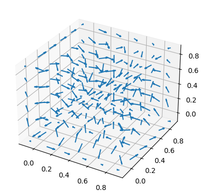
fig = plt.figure()
ax = fig.add_subplot(projection='3d')
theta = np.linspace(0, 2 * np.pi)
x = np.sin(theta)
y = np.cos(theta)
z = np.cos(theta)
ax.stem(x, y, z)
plt.show()
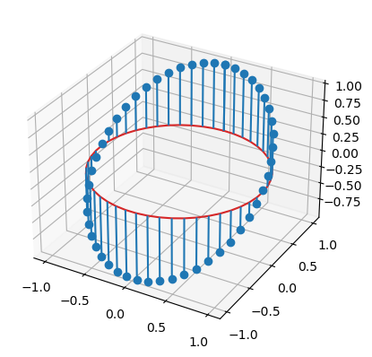
fig = plt.figure()
ax = fig.add_subplot(projection='3d')
u = np.linspace(0, 2 * np.pi, 100)
v = np.linspace(0, np.pi, 100)
x = 10 * np.outer(np.cos(u), np.sin(v))
y = 10 * np.outer(np.sin(u), np.sin(v))
z = 10 * np.outer(np.ones(np.size(u)), np.cos(v))
ax.plot_surface(x, y, z)
plt.show()
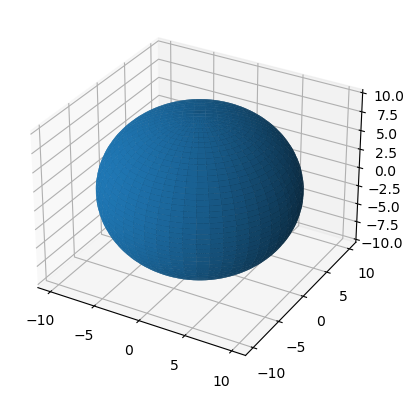
ma = np.random.randint(1, 3, size=(3, 3, 3))
fig = plt.figure()
ax = plt.axes(projection='3d')
ax.voxels(ma, edgecolor='k')
plt.show()
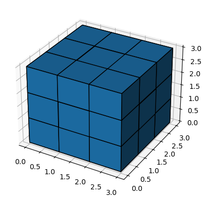